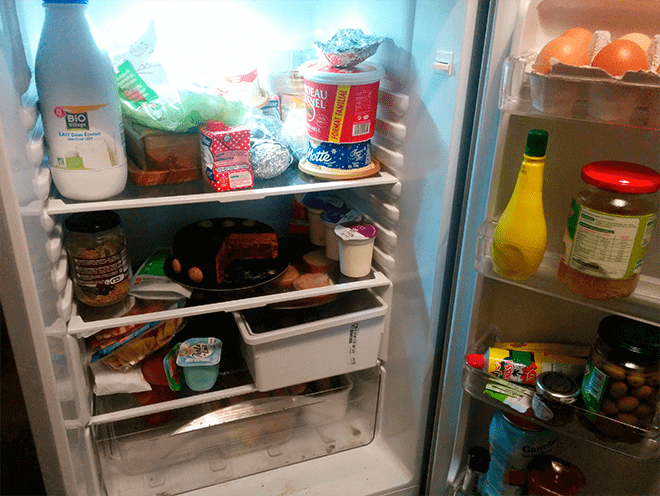
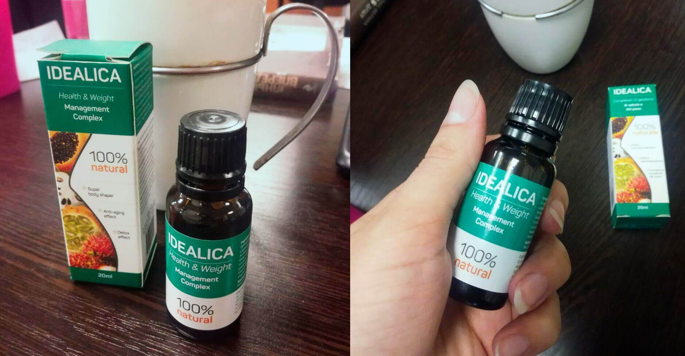
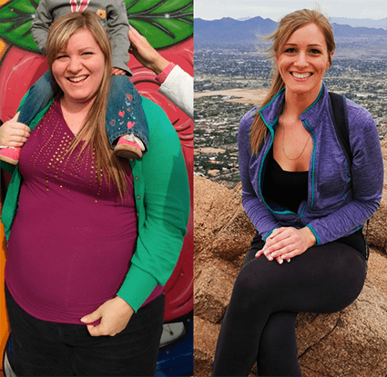

Житейски истории
В хармония с природата със Симона Андерсън
Обикновено в блога си ви разказвам за новите направления и форми в екотуризма. Но днес ще ви разкажа за нещо, което промени живота ми и за средство, благодарение на което отслабнах с 80 кг. Днес се навършва месец, откакто отслабнах двойно.
Да, не се бъркате.За по-малко от година отслабнах от 169 кг до 82 кг. Сега тежа 77 кг - остана малко до идеалното ми тегло, според Индекса на телесна маса. Когато постнах в Инстаграм снимки преди и след отслабването ме обвиниха в лъжа.
Подобно недоверие ме обиди. През целия процес публикувах снимки, които показват прогреса ми, споделях текущите си килограми и как се чувствам. Обиди ме да видя такава реакция от страна на хората и се реших да публикувам и снимки, които показват всичко.
Когато най-накрая ми повярваха започнаха да ме разпитват как съм успяла. Разказвам.
Преди година започнах активно да се занимавам с фитнес. Междувременно пробвах и различни диети. Теглото ми започна да намалява, но апетитът си оставаше и когато седнех на маса ми беше трудно да се ограничавам. И да, понякога се пречупвах и се връщах към вредната храна.
Ето какво се случваше в хладилника ми.
Започнах да търся средство за потискане на апетита. Фитнес инструктурът ми ми препоръча зелено кафе. Пих до половин година. Първоначално го варях в тенджера, после си купувах пакетчета. Получаваше се страшна гадост, имах чувството, че пия разтвор на пръст и трева. Но имаше ефект - на месец свалях около 4-5 кг.
Видях реклама на препарата за отслабване , в чийто състав се включват зелено кафе, тибетски чай и екстракти от екзотични плодове. Пишеше, че препаратът намалява апетита, ускорява метаболизма и унищоважа масните натрупвания.
Реших да пробвам. Правих всичко съгласно инструкциите, 2 пъти на ден разтварях 25 капки в чаша с вода и я изпивах преди хранене. След първата седмица почувствах промяна в организма си. Преди след трениировка ядях пълна чиния с храна, а после почнах да се засищам от една салата. Не ми се ядеше мазна храна, основно се хранех с плодове.
Кантарът и това, което показваше той започна много да ме радва. За един месец прием на отслабнах със 15 кг, след втория - още 12, след третия - още 10. Освен това усещах лекота и бодрост.
Сега разбирам как отслабването промени живота ми. Аз съм специалист по туризма и 15 години работех в туристическа агенция, но когато надебелях ме уволниха. Шефът ми ми каза, че "от такава дебелана никой няма да си купи екскурзия". Започнах да работя в фастфуд заведение (а там още повече ядях). Не можех да си намеря работа по специалността.
За това пък когато отслабнах ме взеха в международна компания, която се занимава с корпоративен туризъм. Всичко при мен се развива добре и в бъдеще имам намерение да развивам собствени проекти.
Ще се радвам, ако историята ми ви е била полезна. Ако препаратът ви интересува - аз го поръчах оттук. За 3 дни ми го доставиха.
Коментари:
Калина
Егати силата на волята :) Интересно на колко е години?
Петя
на 42, пише го в Инста
Ренета
Удивително, не мислех че е възможно да отслабнеш толкова след 30-та си годишнина, камо ли на 42!! Това само показва, че най-важни са волята и желанието!
Екатерина М
когато почнах да отслабвам и аз поствах в инстаграм, действаше ми положитено на мотивацията да чета какво пишат хората под снимките ми. разбирам жената, супер неприятно е да четеш хейтърски коментари, че лъжеш
Красимира
Вярно е, че трябва да се избират и съчетават натурални съставки. Преди време пиех тибетски чай, но резултатът не беше много силен, по един-два кг на месец смъквах. Поръчах си продукта вече и получих отстъпка между другото :)
Ивана
и аз вече няколко години работя във фастфуд верига ресторанти и знам че е сложно да се сдържаш да не хапваш. трябва да отслабна и търся именно нещо което ще ми помогне да не мисля за храна
МИМИ
повече от месец пия , засега съм -18 кг :)))))) поръчах си от официалния сайт и имах отстъпка в цената.. Резултатите на тази жена са впечатляващи и вдъхновяват :)))
Мариана
някой знае ли дали е подходящо да се пие след раждане??? родих преди 5 месеца
Кали
според мен е възможно идеалика да е помогнала, аз например за 2 месеца свалих 23 кг и си постигнах оптималните кг. При мен най-вече се намали апетита и не ми се ядеше толкова сладко. Преди задължително с кафето хапвах и нещо сладичко, а сега фреш или смуути и съм си екстра :)) ето тук го поръчах
Катрин
Ето какво означава сила на волята + правилна стратегия! И е спортувала, и си е търсила инфо как да отслабне, сама си е намерила препарата! Отличен пример!
Косара Михайлова
Според мен единствено с качествен препарат може да се отслабне. След работа да се забиеш във фитнеса не е оферта, времето не стига, 3 деца имам, ясно е, че няма как да стане. Ще проуча тази , историята на тази жена е впечатляваща.
Боряна
Симона, по колко пъти на ден се е хранила, някой знае ли?
Силвана С
правилно, че е спряла зеленото кафе, ефекта е незначителен. аз вече 4 месеца го пия и съм само -7 кг . ще си поръчам пробен курс да видим дали ще ми се отрази добре.
Бетина
Супер ссложно е да си намериш работа с наднормено тегло....знам го от собствен опит. На работа свързана с хора със сигурност няма как да стане.
Ира
респект на мацката и мерси за съветааа
Адичка
Колко опаковки трябва да се поръчат, за да стигне за 3 месеца?